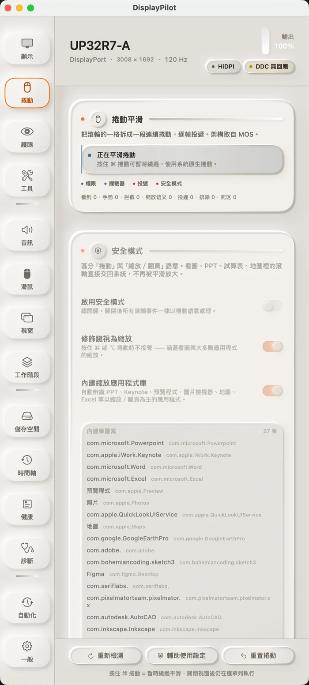

01 · 絲滑捲動
一格滾輪，拆成一段
滾輪的一格不再是一次跳變。事件先被蒐集起來，再掛在螢幕更新上逐幀投遞，每幀送出 pending × (1 − e^(−dt/τ))。因為按時間衰減、不按幀數，60Hz 與 144Hz 的手感一致：離線基準中，120Hz 的首幀從 3 點提升到 9 點，90% 用時從 158ms 縮短到 133ms。
終端機、看圖、簡報這類把滾輪當精確輸入或縮放的視窗，預設交回系統；按住 ⌘ 隨時回到原生捲動；平滑預設關閉，不開啟就不會接管你的滾輪。介面上留有「看到 / 手勢 / 攔截 / 投遞」四個即時計數，換了滑鼠出問題，一眼就看出卡在哪一層。
